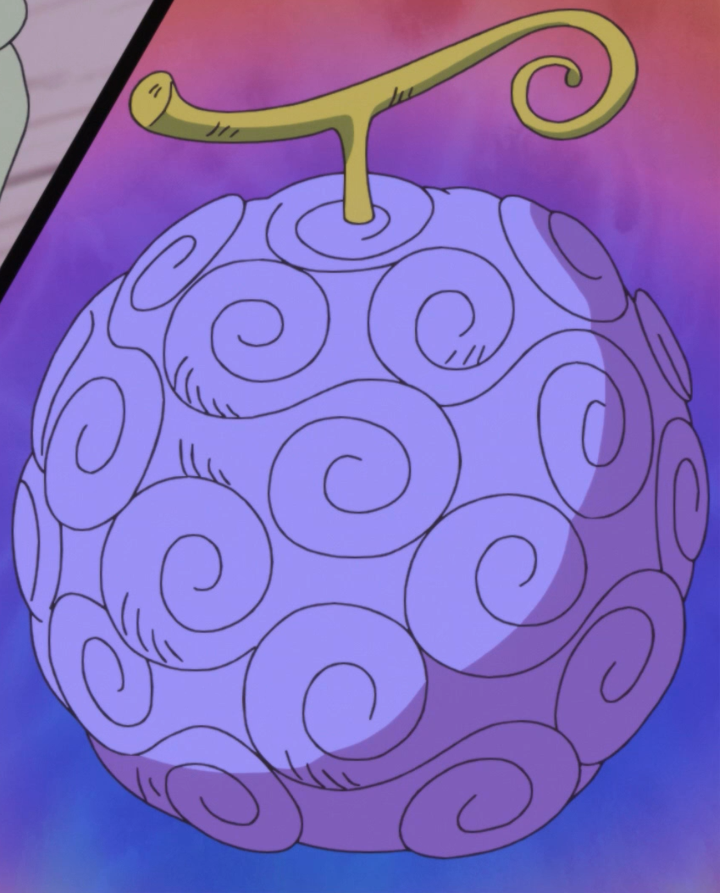

Tabla sobre las Akuma No Mi Nombre Descripción Imagen Gomu-Gomu Tipo Paramecia Usuario, Monkey D. Luffy  Hito-Hito Tipo Paramecia Usuario, Tony Tony Chopper Yomi-Yomi Tipo Paramecia Usuario, Soul King: Brook Posible Nuevo Integrante Inu Inu: modelo Okuchi no Makami Tipo Zoan Mítica Usuaria, Yamato No existe aún imagen oficial de la Ito Ito. Esta es la forma que otorga al usuario